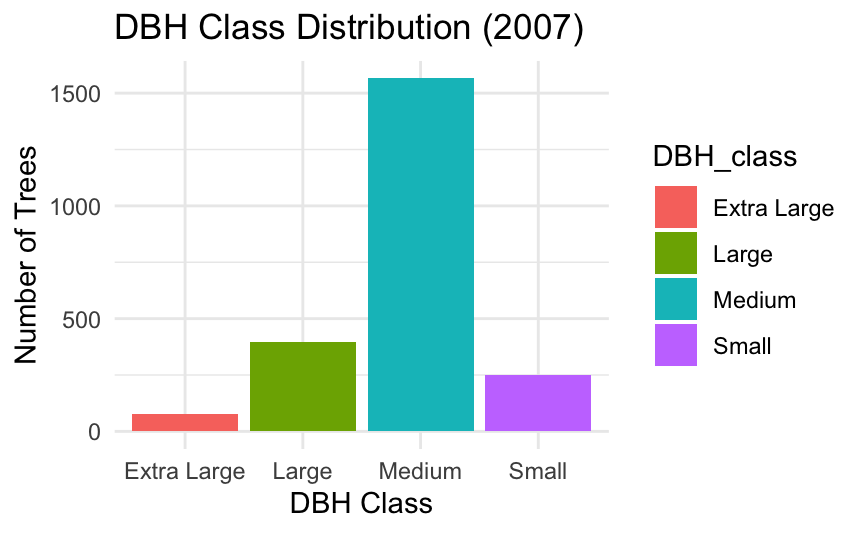
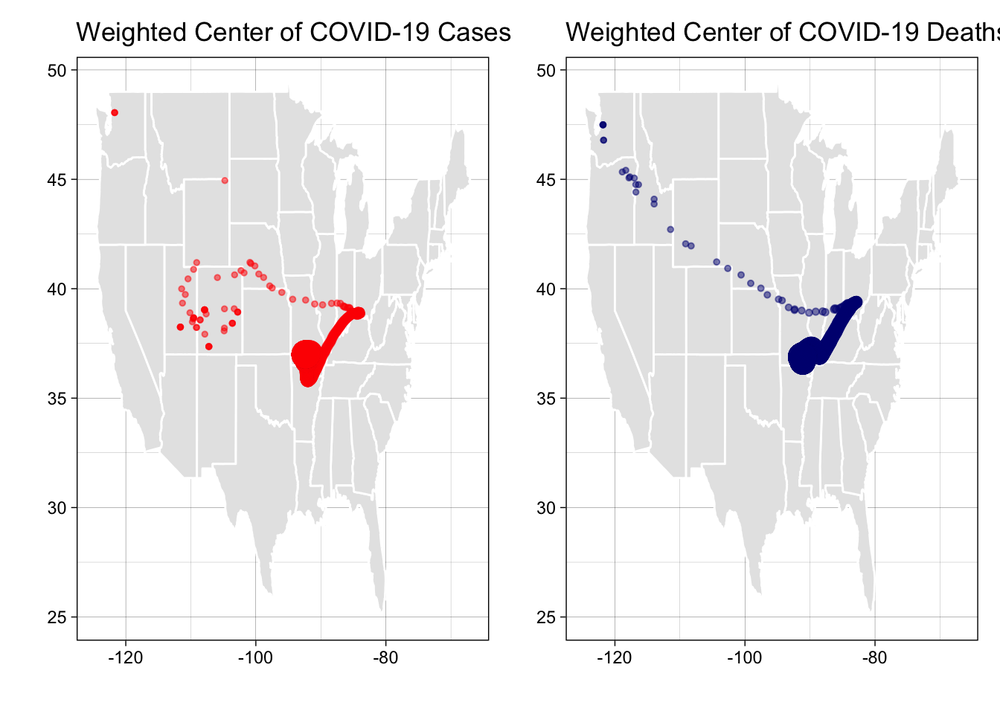
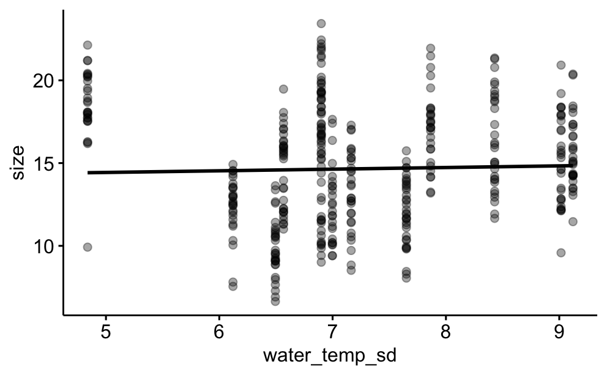
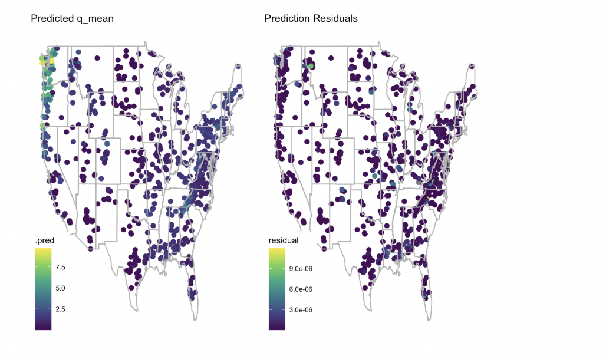
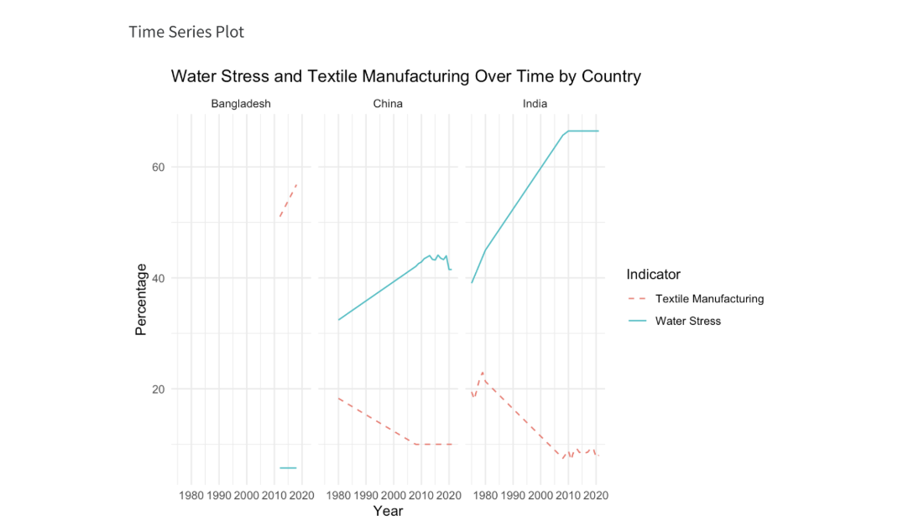
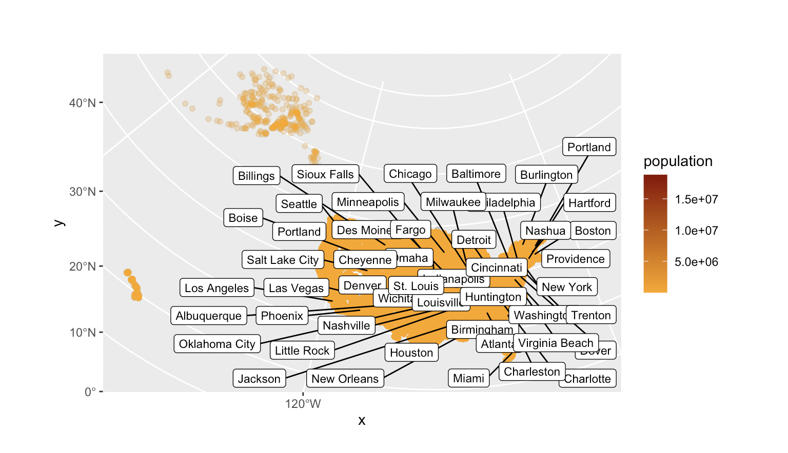
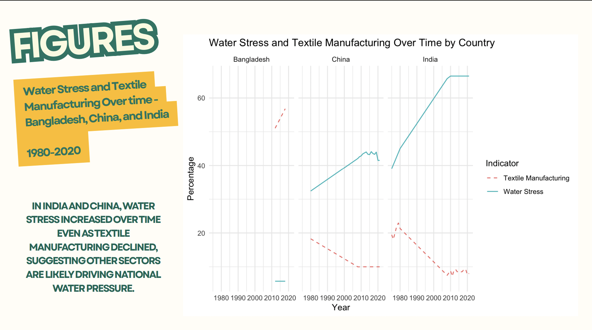

Projects
Lab Projects
Welcome to my RStudio project portfolio! Here’s what I’ve learned from each of the 11 labs in ESS 330 (Quantitative Reasoning for Ecosystem Science)
Lab 1: Intro to GitHub Pages
In this lab, I created my own personal website using Quarto and GitHub Pages. I learned how to structure a .qmd file, edit the YAML header, and deploy content to a live site.
Reflection:
This lab helped me set the foundation for sharing my work publicly. It was empowering to build a site from scratch and understand how version control works through GitHub.
Lab 2: Spatial Thinking and Elevation

I explored digital elevation data by importing a raster file and analyzing the terrain of Fort Collins. I used R to calculate elevation statistics and visualize patterns in topography.
Reflection:
I gained confidence working with raster data and learned how to extract meaningful information from elevation layers using terra and ggplot.
Lab 3: Raster Histograms and Visualization
This lab focused on raster visualization techniques. I learned how to classify elevation data into bins and use color gradients and hillshade to enhance interpretation.

Reflection:
This lab pushed me to think critically about how data visualization choices impact how geographic patterns are understood.
Lab 4: Raster Math and Units
I performed raster calculations including unit conversions from centimeters to feet and learned how to rescale data to different formats and magnitudes.

Reflection:
It was helpful to manipulate elevation data directly and explore how raster math can inform environmental analysis.
Lab 5: Raster Reprojection and Cropping
In this lab, I developed a formal proposal for my final course project. I selected a research question related to environmental data analysis, identified a relevant dataset, and outlined the methods I planned to use.

Reflection:
This lab gave me the opportunity to connect my interests in sustainability and data science through a real-world research lens. It helped me organize my thoughts, clarify my goals, and build a roadmap for completing a meaningful and structured final analysis.
Lab 6: Machine Learning with CAMELS
I used the CAMELS dataset to predict mean streamflow (q_mean) using an XGBoost model. This included cleaning data, tuning hyperparameters, and evaluating predictions.

Reflection:
This was my first time implementing a full machine learning workflow. I learned how important clean data and model tuning are for accurate environmental predictions.
Lab 7: Data Cleaning with CAMELS
Building off Lab 6, I performed deeper data cleaning, handled missing values, and examined data distributions to prepare for more robust modeling.

Reflection:
This lab taught me how to recognize and handle messy environmental data and the value of preprocessing in any analysis pipeline.
Lab 8: Modeling and Mapping Predictions
I mapped XGBoost model predictions across the CONUS region using geospatial tools. I also evaluated model accuracy using spatial cross-validation.

Reflection:
It was exciting to see model outputs visualized across a real geographic scale. This helped me connect statistical modeling with spatial insight.
Lab 9: County Level Population and Land Use
I joined raster and vector data to explore land cover and population distributions. I used spatial joins to identify intersections between counties and land cover types.

Reflection:
This lab improved my skills working with multiple spatial data types and set the stage for real-world environmental planning.
Lab 10: Distance from the Border Zone
I analyzed spatial proximity to the U.S. border zone and explored how distance calculations are used in policy and surveillance contexts.

Reflection:
This lab was a great example of how spatial analysis applies to real policy issues. It challenged me to think critically about data and ethics.
Lab 11: River Profile of the Cache la Poudre
I extracted a river profile using OpenStreetMap and DEM data, calculated the river’s slope and sinuosity, and plotted its elevation profile.

Reflection:
This final lab brought everything full circle—from raster handling to vector analysis. It was a great capstone to demonstrate what I’ve learned this semester.